A long experience in kites rescuing, always not volunteered but full of lessons, told me, first that nobody is sheltered from being caught in a disaster, secondly that there are many advisers, but that their advices are not often advised.
I also grinded some tricks in, to do or not-to-do, but no miracle recipe !
Simple cases, first, not so rare :
A) You are tied with a co-kiter line or kite.
If your kite itself is tied in the other line, DON'T PULL, don't even maintain the tension, which generally will have your kite turn around the line(s) and make the problem more intricate.
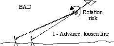
On the contrary, try to loosen the line and advance so your kite will fly freely again, and apart from the other's line, even if the line's crossing persists.
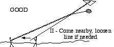
Only then, march to the foot of the other line without pulling (it can be necessary to let some more line go). Initial advantage : in this position, it is impossible for a line to cut the other one. Then, hold both lines together and alternatively pull each line : the crossing point will go down and you will be able to see which way you have to turn to come free. And, even if it is the other's fault, smile to him, he is less experienced than you and he learns ! If it is Your fault, beg your pardon, unless the other guy tells you words, then don't answer, he is an ill-bred unworthy to fly kites !
B) Your kite starts a rotation or an uncontrollable dive :
Except if you have already proved in the past that this gives back control, DON'T pull the line as quickly as possible.
First if you follow my advice, you will not cut your friends lines, for it is the line that doesn't slip which is cut (especially if some knot on it maintains the sawing on one single point).
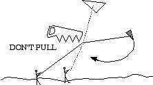
So, not pulling is politically correct and altruist. But also it will permit you to more easily find thereafter helpers not occupied by their Own rescuing, and not frowning at that bloody bungler...
Then, loosening the line often allows most kites to rescue by themselves : the relative wind is less strong, the kite recovers a flat attitude, and you only have to turn it back to a more academic position.
At last, if your kite is behind an obstacle, it is better to let it fall on the ground rather than pull and send it to anchor at the top of a tree or a chimney. In some very neat cases, it is possible to re-launch a kite, the line of which will get then free of the obstacle when climbing, but it is a risk you have to assume :
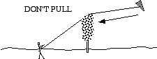
So, let it fall, you will find it on the ground, you will unknot the line and get the machine back which already is not bad.
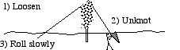
Then, go back to the bob, roll the line on it normally, to avoid line mix-up. The mix-up is a plague of post-rescue : either after you have pulled lengths of line and dropped them in the thistles, taken it in your shoe-laces when running, or when a good-volunteered inexperienced helper has rolled into an inextricable wad your line that "lied abandoned" to "help" you and make you "save time".
So, roll it, but slowly, especially if your line goes through tree branches. This is to avoid that the end, when released from a first blocking, whips around another one, which is like a knot if more than 2 or 3 turns. And pulling on a branch (even thin) by its end has little chances of success : it folds with no concentration point where to break and can resist more than any line ! And if it is an electric cable, You will not allow yourself to pull ?!
If you, or a good-volunteered helper HAS pulled and put your kite in a tree, it is positionned "downwind" of that tree. Try then not only to no more pull, but to loosen line while shaking it.
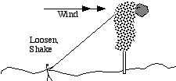
Perhaps the kite will progressively separate from the tree (insist, it can take some time during which nothing seems to happen) until it falls or at least can be more easily taken. It is possible you will have to wait (perhaps several days...) that the wind gets stronger or turns. If it finally works, you are back to the case above.
C) Your line is cut and your kite leaves for its own life.
More stressing !
If it is to go far, first stay calmly on the spot (use that time to roll your piece of line on the bob, this will prevent you from cutting a biker's throat or finding a wig when coming back, and it will allow you to carry it with you on your search, it can be useful). But, above all, survey the trajectory and take a good alignment of the direction where it goes (= 2 points : one where you are, one in the kite's direction, that you are sure you will see from the research area) : buildings, high trees, chimneys, high-tension line's pillars (What ? You would never fly there ?).
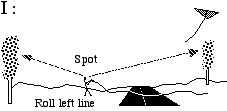
Then, if you are not in direct sight of the kite, directly take a car, one or two friends, your most stable Rokkaku, a solid line and some more string (see down) :
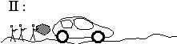
It is always further than you thought, not really in the place you believed, and you will have to explore all streets or paths in the forest. If you run first by foot and not find it, you will have lost half an hour (and you will already be very tired).
Anyway, search for the kite, but also for the line if it still carried a good length of it.
D) Your kite still flies, but the line is caught
Another case, but which can include above ones. The line is caught in something : tree, chimney, TV antenna, ferocious dog... Or else, your kite felt on a tree, a roof, in a non-accessible garden (because the dog, evidently...).
Two cases are possible :
D1) Your line is caught but not cut and you keep it in hand.
It is a great advantage, try to gently pull and shake, lines are more solid than usually thought. But don't ruin that advantage by wildly pulling on it until it breaks (especially if it runs along a chimney or a rotten piece of metal that will destroy it).
You can try to get hand again on the line further than the obstacle as explained below in D2.
But you can also, using another kite, run a less destructive manoeuvre : first, fly the other kite high enough for it to be stable and rather strong pulling. Then attach a hanging wire to the line of this helper-kite, and at the end of this wire, a metal ring that will slip on your line (as in case 2 down, always give the wire a sufficient length to be sure to recover the helper-kite in any case). Bring the ring near the blocking point, and do your best by moving laterally, pulling downwards, shaking, etc.
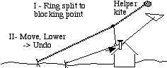
If you need strong vertical pulling (for instance kite in a tree or on a roof), first choose a strong pulling helper-kite. Then use no ring and directly knot your line to the wire, itself knotted under the helper-kite line with no slip allowed : use of slipping link would divide by 2 the traction of the helper-kite at the level of the rescued kite (like in a pulley-block, inverted) :
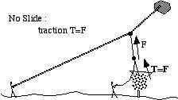
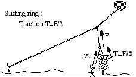
Allowing slip is only useful in the case you need to move the action point to or near to the blocking point. When you make the knot, be only sure you will have line enough ; if needed attach a second line to yours.
In all these manoeuvres, using talky-walkies (or portable phone if you have a big enough contract) is an important trump : according to the place you are, you can not well judge the relative position of cross points, direction of traction to perform and manoeuvres to do for best action.
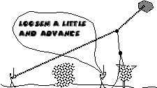
The one who manoeuvres the bob of the helper-kite generally very poorly sees the longitudinal situation, although he commands it either by loosening the line to have his kite climb or change the axis of the traction, or else by pulling to strengthen his line and give a vertical push.
D2) You lost reach of your line.
-> The line is cut or you have let the bob go, and it is caught somewhere out of hand.
With the help of a friend, try to get hand on the line further than the caught point. You need a hanging wire with something at the end that can hook your line.
But never forget that if this hook... hooks in something you-didn't-imagine-it-could (general case, see Murphy's law), it is necessary to still be able to get back the helper-kite. So the hanging wire must be long enough, or widely less solid than the helper's line.
If successfull, you get your kite back, it was the principal aim, and for the line, do your best. If pulling by this side, perhaps you will have it too. Or, by leaving it go, you will get back your bob down the tree. At worst, you will have to abandon a limited piece of the line.
You can also, if your kite itself is caught, try to hook it with some type of improvised grapnel : for instance a piece of branch that will pass in some hole of your kite, this is difficult and preferably needs 2 people with talkies ; or with a loop of rope you will pass around the kite. But never forget : never be in a situation you could loose the helper-kite.
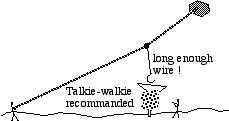
Then, pull, even if the kite breaks some way to get free, and in the good direction (in a tree, opposite to the trunk, and as high as possible which means as far as possible if you are on the ground !).
Instead of a friend's kite, you can, if it is not too high, use a long rod.
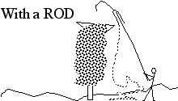
My friend Sylvien always carries a 9,50 m long one in his car, with different "actuators" to hook, push, cut, etc. These actuators are just slipped-on at the end of the rod with a line to the ground. So, when in contact, you can always have the rod back and pull the line to "act" the "actuator"... or to recover it !
It is also possible to launch something with a string attached to it, and hope to pass over the kite.
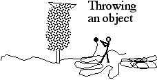
Succes probability is not big : first, it is difficult to launch an object more than 7 or 8 m high, especially with a string that must follow (I know, it seems easy, just try...). Then probability of catching something else than the kite is very high ! And then, it is difficult, even if you passed exactly where you wanted, to obtain the desired result :
if you launch a true grapnel it will hook in the tree at first try. If you use a rock, easier to recover in case of a miss (and less expensive...) it will not pull your kite. It is generally better to let the thing go down to the earth, have the two ends of the string and pull the kite with both, with even a slipping knot around the kite if needed.
(could-be a good solution : another friend, Gaby, uses a bow and arrow to carry a string over the kite (or even through !). The arrow goes down easily, even amidst the branches of a tree. Just pay attention to people further, in case you overshoot...).
E) You are desperate.
You tried everything : last chance, contact the meeting organization, tell them you tried all and ask them to request municipal help. Firemen generally refuse : they must keep ready for more useful needs. On the contrary, towns of some importance will often have a permanence and a hydraulic platform elevator able to reach 10 m high at least. (following picture is here to prove that I don't rely on theory but on unfortunately live testimony)
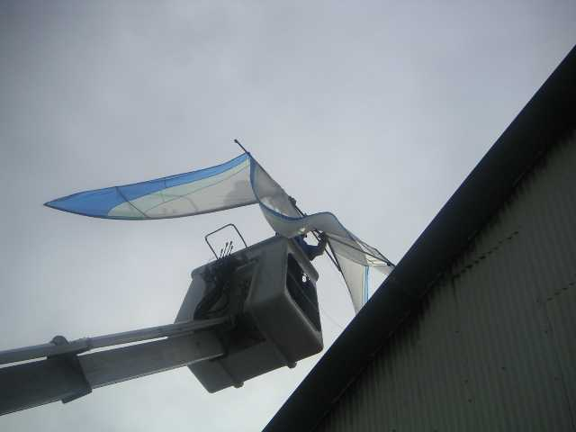
You just have to find the good kiter who will know how to motivate them, because his organization is large enough, or because he knows the brother-in-law of the sister of the lady who holds the permanence and to whom they don't dare refusing anything... And you (or the organization) can offer them a glass to thank them and give motivation for the next time...
But even if you have to abandon, don't desperate :
Michel's Rokkaku passed half of last winter in a tree and felt due to the weight of snow that accumulated on it !
A Jessica of Sylvien, that had its line cut during night-flight over the ocean was found two days later by François (who stayed one more day after the festival), in front of a fisherman cabin at the end of a fishing jetty, 2 kilometers from there.
Dédé's beloved Rokkaku leaved on the sea, dragging its line in the water, and was followed till too small to be visible at horizon, but still flying. Dédé had already sadly made a prayer on the grave of the kite. One hour later, it was back at the welcome point : a boat had found it behind an island and brought back quickly to the festival.
So, don't desesperate. But know that sometimes you can loose one : I lost one, Christophe one, Daniel one and all occurences are not reported to me.
So, have pity, selfish kiters, no kevlar lines that cut all others, or go fly alone, somewhere else !